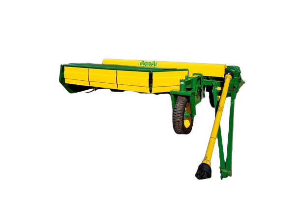
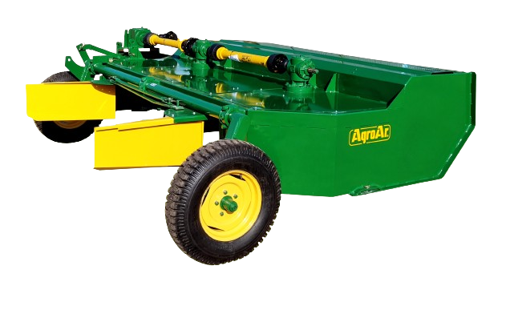
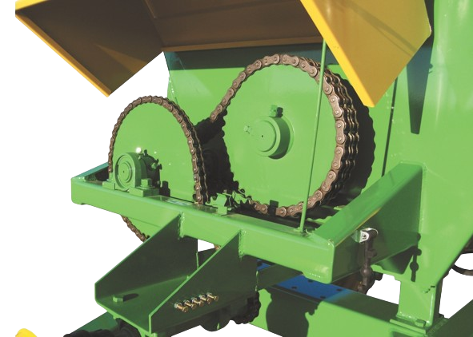

Características Técnicas
Cargador Transportador de Rollos
CTR623
- Capacidad de carga: 6 grandes o 8 rollos chicos.
- Púas cargadoras regulables para rollos chicos o grandes.
- Original sistema de carga/descarga sin elementos o partes sometidas a desgaste.
- 4cilindros hidráulicos sometidos.
- Robusto chasis de acero 140 x 140.
- Dimensiones: Ancho máx. 2,60mts. Largo total 11,80mts. Largo carga útil 9,30/10mts.
- Para utilizar dos cubiertas 400/60 x 15.5

.png)

Desmalezadora Hileradora Cardánica
HC3023
- Ancho de corte: 3mts.
- Ancho de transporte 2,60mts tiro de punta.
- Altura de corte: regulable de 4 a 400mm. Por medio de crique manual o cilindro hidráulico.
- Despeje: 430mm con cielo abulonado.
- Acople tractor: lateral, con tren delantero articulado de gran robustez.
- Rodados: 3-600x16 (sin neumáticos). Rápida colocación, cero compleja.
- Transmisión: cardánica, tres cajas con engranajes cónicos de acero con tratamientos térmicos.
- Chasis: estructura tubular de gran rigidez, con cielo solapado que impide, en posición de corte hilerado, retención y atoramiento, eliminando así el repicado tradicional en pasturas acolchonadas.
- Cuchillas: oscilantes y fijas de acero con doble filo mecanizado.
- Accionamiento: por toma de fuerza de tractor a 540 RPM.
- Peso: 1200kg aprox.



Mezclador y Distribuidor de Ración
M9009
- Capacidad: 9mts. (3500kg aprox).
- Peso: 2.800kg.
- Potencia mínima requerida: 70HP
- Fondo: chapa de acero 3/16 cambiable,con drenaje.
- Sistema de mezclado: Tres sinfines helicoidales horizontales reforzados, uno inferior (614 x 114 x 3/8) y dos superiores (544 x 114 x 1/4) con ejes cambiables en ambas puntas de 80-70 y 50 mm.
- Reducción y transmisión: a cadenas y engranajes de 1 y 1 1/4 doble.
- Reducción y transmisión: a cadenas y engranajes de 1 y 1 1/4 doble.
- Materiales que procesa: silajes de sorgo, maíz y pasturas picados finos. Concentrados y subproductos secos (granos, rollos de heno molido (fibra 3-5mm máx), etc).
- Descarga: noria lateral de 2 sinfines accionada por motor hidráulico de accionamiento independiente.
- Tiempo de descarga: regulable, mínimo 2 minutos.
- Apertura y cierre compuerta descarga: Hidráulica, de accionamiento independiente.
- Regulación de altura de descarga: Hidráulica, de accionamiento independiente.
- Sistema de seguridad:Doble Zafe- con fusible de barra cardánica y engranaje reductor primario.
- Rodados: Balancin 4 - 1000 x 16. Suave y liviano desplazamiento.
- Opcionales: Balanza electrónica | Lona | Placa imantada.